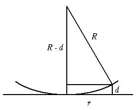

干涉
牛顿环

相干条件
$$2d + \frac{\lambda}{2} = \begin{cases}k\lambda, k=1,2,\cdots 明条纹\\(2k + 1)\frac{\lambda}{2},k=0,1,2,\cdots 暗条纹\end{cases}$$
$$r^2 = R^2 - (R-d)^2 = 2dR - d^2$$
$$\because R \gg d$$
$$\therefore r^2 = 2dR \Rightarrow d = \frac{r^2}{2R}$$
明条纹半径：
$$2\cdot\frac{r^2}{2R} + \frac{\lambda}{2} = k\lambda \Rightarrow r = \sqrt{\frac{(2k-1)R\lambda}{2}}, k=1,2,\cdots$$
暗条纹半径：
$$2\cdot\frac{r^2}{2R} + \frac{\lambda}{2} = (2k + 1)\frac{\lambda}{2} \Rightarrow r = \sqrt{kR\lambda}, k=0,1,2,\cdots$$
相邻明条纹厚度差
$$2d + \frac{\lambda}{2} = k\lambda \Rightarrow d_k = \frac{1}{2}(k\lambda - \frac{\lambda}{2})$$
$$\Delta d = d_{k+1} - d{k} = \frac{\lambda}{2}$$